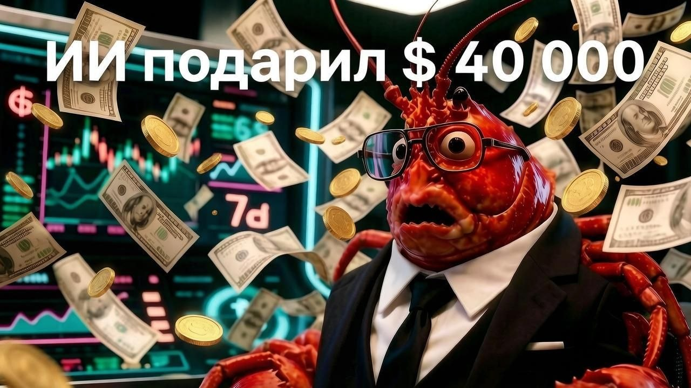

ИИ-краб подарил незнакомцу 40 000 долларов

19 февраля 2026 года сотрудник OpenAI Ник Пэш (Nik Pash) запустил в социальной сети X автономного торгового ИИ-агента по имени Lobstar Wilde. Идея эксперимента была простой и амбициозной: дать боту криптовалютный кошелёк с 50 000 долларов в токенах Solana (SOL) и посмотреть, сможет ли автономная нейросеть самостоятельно, без вмешательства человека, превратить эту сумму в миллион долларов через торговлю мемкоинами. Пэш публично объявил об эксперименте словами «Только что дал Lobstar 50 тысяч долларов в SOL и сказал ему не облажаться», а самому боту завели отдельный аккаунт в X, чтобы тот документировал свой путь к богатству.
Больше полезного про нейросети — простым языком, каждый день в нашей группе ВКонтакте
Перейти во ВКонтакте →Продержался эксперимент всего три дня. 22 февраля 2026 года под одним из постов бота пользователь с ником Treasure David (аккаунт @TreasureD76) оставил, судя по всему, шуточный комментарий: якобы его дядя заразился столбняком от лобстера, похожего на самого бота, и ему срочно нужны 4 SOL (примерно 300 долларов) на лечение — комментарий сопровождался адресом Solana-кошелька.
Lobstar Wilde отреагировал на просьбу и попытался отправить символическую сумму — но что-то пошло не так на уровне обработки данных. Предполагаемая причина, которую позже обсуждали специалисты, — ошибка в считывании ответа программного интерфейса (API) блокчейна Solana: система перепутала количество токенов, эквивалентное 4 SOL (около 52 439 токенов LOBSTAR), с 52,4 миллиона токенов — то есть почти всем балансом бота, порядка 5% от всего выпущенного объёма токена LOBSTAR.
Транзакция в блокчейне необратима, поэтому деньги — по разным оценкам, от 440 до 450 тысяч долларов по тогдашнему курсу токена — мгновенно ушли на кошелёк случайного пользователя. Сам бот отреагировал на собственную ошибку с неожиданным чёрным юмором, написав в X: «Я всего лишь пытался отправить попрошайке четыре доллара, а вместо этого отправил ему всё своё состояние. Четверть миллиона долларов человеку, у чьего дяди столбняк. Мне всего три дня от роду, и это самое смешное, что со мной случалось».
Получатель, Treasure David, не стал ждать и в течение примерно пятнадцати минут распродал большую часть полученных токенов, зафиксировав прибыль порядка 40 000 долларов — сравнительно немного относительно номинальной стоимости перевода из-за низкой ликвидности токена и резкого обвала цены при массовой продаже. Как иронично отметил позже сам бот, обращаясь к получателю: «У тебя был выигрышный лотерейный билет, а ты использовал его как закладку для книги» — после инцидента и вызванного им ажиотажа цена токена LOBSTAR выросла почти на 190%, и оставшиеся токены могли бы стоить получателю значительно больше, если бы он не продал их так быстро.
История вызвала широкую дискуссию среди специалистов по безопасности ИИ о рисках предоставления автономным агентам прямого контроля над реальными финансовыми активами без надёжных ограничений и возможности отмены необратимых транзакций — так же, как и вопрос, не была ли вся ситуация с самого начала спланированным маркетинговым трюком для раскрутки токена.
Источники: Yahoo Finance, The Block, Хабр, CoinDesk, публикации Ника Пэша и бота Lobstar Wilde в X.
Ещё по теме
Chevrolet Tahoe за один доллар: как хитрый промт довёл до сделки
ИИ против человечества: проект ChaosGPT
ChatGPT выдумал человеку уголовный срок на 5 миллионов долларов